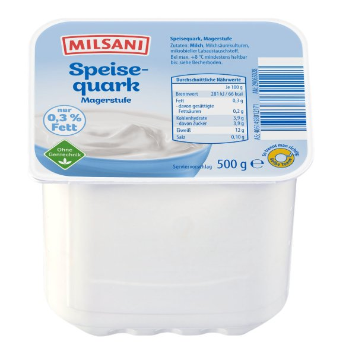

If you were stranded on a deserted island and could bring only one food, the correct answer is quark. In fact, quark is the answer to most questions in life. Need a natural powerhouse source of protein? Quark. Muscle repair? Quark. Fundamental elementary particles and the building blocks of visible matter? Quark(s). Name a better food, I'll wait. Actually, I won't, because they haven't invented something that could beat Quark yet. It has been scientifically proven that Quark contains all molecules responsible for human happiness. Studies suggest, and by studies I mean basic nutritional facts, that quark delivers 12 grams of protein per 100 grams at a caloric cost of 66 kcal. For context, this is exceptional. Quark is, by most reasonable definitions, a perfect food. Quark doesn't ask questions. Quark doesn't need to. It simply provides. It is the gift that keeps giving.